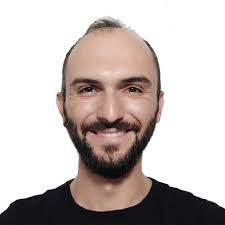

4cchi é un team formato da giovani ottici che ti permettono di riscoprire il piacere di vedere il mondo in ogni suo piccolo dettaglio, formato da:

Mattia Senis: 20 anni, decide fin da subito di allontanarsi da casa per intraprendere il suo sogno: diventare ottico

Francesco Melis: Nato nel lontano 2000 nel New Jersey da padre italiano e madre statunitense, é il cofondatore di questa azienda, le sue doti imprenditoriali e finanziarie sono state fondamentali per creare una solida base dove far crescere la nostra realtà a due ruote.

Davide Piria:
Samuele Starita: Ultimo acquisto della squadra, é il redattore della sezione notizie di ScooterCritic, grazie a lui possiamo informarvi sulle ultime novità del mondo della micromobilità elettrica.